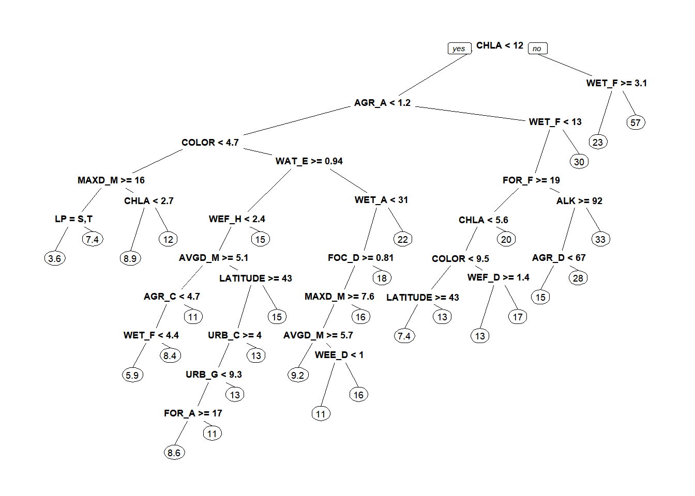

Classification and regression trees (CART)

Introduction
This week we will continue down the path of machine learning and exploratory/descriptive statistical tools by talking about decision trees, with a specific focus on classification and regression trees. In our discussions this week, and in our readings, we learned that CART can be complementary to many of the analyses we have done this semester. We also learned that this tool could very likely replace many of the techniques we have talked about this semester in studies for which we have complex datasets with large numbers of explanatory variables. But, the real power in this technique lies in the ability to identify emergent patterns in data that we might otherwise overlook given our limited ability to observe them, even with other powerful statistical tools. All of this, recall, comes with the added bonus that the technique is free of any kind of distributional assumptions, and it can handle missing data in both the response and the explanatory variables. This utility also extends into the realm of multivariate techniques with the development of multivariate trees in very recent years.
As discussed in class, classification trees tend to be slightly more complex than regression trees, and if you can interpret a classification tree you can interpret a regression tree. Furthermore, classification trees provide a nice alternative to complex categorical regression techniques (i.e multinomial logistic regression) and are naturally well suited for situations in which we might otherwise employ binomial logistic regression. For these reasons we restrict our treatment of CART to classification trees during the lecture this week. Now, we will work with regression trees for the lab.
By the end of this week, you should understand 1) why we use decision trees and what their limits are, 2) how to implement classification and regression trees in R (inluding how to diagnose overfitting and predictive ability), and 3) how to interpret the results of a fitted tree.
Exercises
Let’s start with the data. The data this week come from a study that looked at effects of various local and landscape-scale factors on total phosphorus, total nitrogen, and nitrates within just under 350 lakes in Michigan.
The paper can be found here.
The full description of these data is posted on the course website here as the data set is extensive and we will only need to examine a few of these variables closely by the time we finish fitting our trees. For now, it might be helpful for you to know that variables 21 and 22 represent connectivity measurements and all variables 13:94 represent landscape variables at different scales. (Wow, that’s a lot of variables!!)
# Read in the data set
water = read.csv("water.csv")
# Get a feel for the data structure:
# Lots of numeric variables and a few factors
# that will need to be removed
str(water)'data.frame': 346 obs. of 94 variables:
$ NEW_KEY_CODE: Factor w/ 346 levels "1_99","10_39",..: 293 221 223 3 10 11 15 17 18 27 ...
$ Lake_Name : Factor w/ 279 levels "","Allen Lake",..: 78 178 167 108 111 263 74 246 30 231 ...
$ LATITUDE : num 46.1 43.6 45.4 41.8 42.3 ...
$ LONGITUDE : num -86.3 -85.3 -87.8 -85.2 -85.2 ...
$ EDU : int 7 5 8 3 3 3 3 3 3 5 ...
$ DR_COD2 : Factor w/ 3 levels "DRST","DRSTLK",..: 2 2 2 3 3 3 3 3 3 3 ...
$ LP : Factor w/ 6 levels "F","H","IH","IO",..: 1 1 6 5 2 2 2 5 2 5 ...
$ AVGD_M : num 6.6 3.2 3 5.9 5.3 5.8 4.6 6.06 12.3 11.3 ...
$ MAXD_M : num 16.8 11.9 12.5 14.9 20.1 ...
$ TP : num 5 6 13 11 16 8 15 51 12 8 ...
$ ALK : int 18 117 158 126 111 159 155 81 118 98 ...
$ SEC : num 5.33 2.13 3.35 2.74 3.35 ...
$ CHLRD : num 0.5 5 1.5 7.2 29 7.9 15.2 45 3.7 1.2 ...
$ CHLA : num 3 0 4.3 5.1 0.43 3 4.9 5.8 2.6 0.1 ...
$ COLOR : num 2 12 26 5 6.5 14 3 10 3 4 ...
$ NITRATE : int 1 20 10 50 0 7 260 13 20 5 ...
$ TN : num 302 191 514 781 588 708 912 976 395 366 ...
$ LK_AREA_HA : num 34.5 126.2 28.7 56.4 136.5 ...
$ LCL_AREA_HA : num 113 164 145 123 682 ...
$ NET_AREA_HA : num 360 4564 13705 NA NA ...
$ UPDIST_NET : num 0 22.5 84.6 NA NA ...
$ UPDIST_LCL : num 0 0 0 0 0 0 0 0 0 0 ...
$ URB_A : num 36.7 57.9 19.4 58.6 84.9 ...
$ AGR_A : num 0 0 0 14.2 0 ...
$ FOC_A : num 0.234 0 26.534 0 0 ...
$ FOD_A : num 51 17.8 41.3 19.6 0 ...
$ FOR_A : num 51.2 17.8 67.9 19.6 0 ...
$ WAT_A : num 5.662 8.676 0.242 1.839 3.465 ...
$ WEF_A : num 0 2.43 0 0 6.28 ...
$ WEE_A : num 0 6.37 3.63 2.21 5.3 ...
$ WET_A : num 0 8.81 3.63 2.21 11.59 ...
$ URB_B : num 0 0 0 0 0 0 0 0 0 0 ...
$ AGR_B : num 0 0 0 0 0 0 0 0 0 0 ...
$ FOC_B : num 0 0 0 0 0 0 0 0 0 0 ...
$ FOD_B : num 0 0 0 0 0 0 0 0 0 0 ...
$ FOR_B : num 0 0 0 0 0 0 0 0 0 0 ...
$ WAT_B : num 0 0 0 0 0 0 0 0 0 0 ...
$ WEF_B : num 0 0 0 0 0 0 0 0 0 0 ...
$ WEE_B : num 0 0 0 0 0 0 0 0 0 0 ...
$ WET_B : num 0 0 0 0 0 0 0 0 0 0 ...
$ URB_C : num 16.95 30.72 6.05 23.81 84.67 ...
$ AGR_C : num 0 0 0 62.56 0.31 ...
$ FOC_C : num 8.89 0 54.23 0 0 ...
$ FOD_C : num 56.925 49.445 35.634 10.229 0.902 ...
$ FOR_C : num 65.821 49.445 89.867 10.229 0.902 ...
$ WAT_C : num 2.549 3.862 0.045 0.649 1.121 ...
$ WEF_C : num 0 4.54 0 0 5.87 ...
$ WEE_C : num 2.46 3.84 1.05 1.43 5.55 ...
$ WET_C : num 2.46 8.38 1.05 1.43 11.42 ...
$ URB_D : num 12.03 31.56 3.93 22.7 79.92 ...
$ AGR_D : num 0 0 5.68 64.3 1.8 ...
$ FOC_D : num 7.29 0 57.97 0 0 ...
$ FOD_D : num 57.54 48.9 27.07 9.75 1.54 ...
$ FOR_D : num 64.82 48.9 85.05 9.75 1.54 ...
$ WAT_D : num 2.549 3.862 0.045 0.649 1.121 ...
$ WEF_D : num 0 4.54 0 0 3.56 ...
$ WEE_D : num 4.47 3.76 3.34 1.37 4.48 ...
$ WET_D : num 4.47 8.3 3.34 1.37 8.04 ...
$ URB_E : num 11.89 31.56 3.93 22.7 74.42 ...
$ AGR_E : num 0 0 5.68 64.3 6.95 ...
$ FOC_E : num 7.2 0 58 0 0 ...
$ FOD_E : num 57.14 48.9 27.07 9.75 3.5 ...
$ FOR_E : num 64.34 48.9 85.05 9.75 3.5 ...
$ WAT_E : num 2.519 3.862 0.045 0.649 0.903 ...
$ WEF_E : num 0 4.54 0 0 2.87 ...
$ WEE_E : num 4.42 3.76 3.34 1.37 3.61 ...
$ WET_E : num 4.42 8.3 3.34 1.37 6.48 ...
$ URB_F : num 11.89 31.56 3.93 22.7 69.39 ...
$ AGR_F : num 0 0 5.68 64.3 11.63 ...
$ FOC_F : num 7.2 0 58 0 0 ...
$ FOD_F : num 57.14 48.9 27.07 9.75 4.68 ...
$ FOR_F : num 64.34 48.9 85.05 9.75 4.68 ...
$ WAT_F : num 2.519 3.862 0.045 0.649 0.841 ...
$ WEF_F : num 0 4.54 0 0 2.67 ...
$ WEE_F : num 4.42 3.76 3.34 1.37 3.36 ...
$ WET_F : num 4.42 8.3 3.34 1.37 6.04 ...
$ URB_G : num 0 0 0 0 0 0 0 0 0 0 ...
$ AGR_G : num 0 0 0 0 0 0 0 0 0 0 ...
$ FOC_G : num 0 0 0 0 0 0 0 0 0 0 ...
$ FOD_G : num 0 0 0 0 0 0 0 0 0 0 ...
$ FOR_G : num 0 0 0 0 0 0 0 0 0 0 ...
$ WAT_G : num 0 0 0 0 0 0 0 0 0 0 ...
$ WEF_G : num 0 0 0 0 0 0 0 0 0 0 ...
$ WEE_G : num 0 0 0 0 0 0 0 0 0 0 ...
$ WET_G : num 0 0 0 0 0 0 0 0 0 0 ...
$ URB_H : num 5.5 3.63 0.94 0 0 ...
$ AGR_H : num 0 34 10.5 0 0 ...
$ FOC_H : num 2.37 4.81 29.02 0 0 ...
$ FOD_H : num 60.8 41.9 47.7 0 0 ...
$ FOR_H : num 63.2 46.7 76.7 0 0 ...
$ WAT_H : num 13.14 1.75 1.19 0 0 ...
$ WEF_H : num 0 1.81 3.73 0 0 ...
$ WEE_H : num 5.17 1.1 1.04 0 0 ...
$ WET_H : num 5.17 2.9 4.77 0 0 ...There’s no real meaningful way for us to deal with a few of the variables in this study using CART. These include lake names, organizational codes within the dataset, and response variables that we are not going to concern ourselves with. So, let’s go ahead and remove those for now.
We’ve done this so it is easier for us to use the entire dataframe when we make the call to rpart. We’ll also get rid of species for now to make things a little easier to interpret. And, as long as we are at it, we need to cast all of the remaining variables in the dataframe as factors.
Before you go any further, set a seed for random processes in your script. The reason for this is that it will make your results reproduceable when I run your code. Pick any number you like. you can choose it from a random number generator if you like, but enter the reuslt in the ‘set.seed’ function, like this:
# Enter a random number seed like like this:
set.seed(123)
# NOTE: your results won't match mine if you use this because I didn't set a
# seed.
Now that you have the data ready for analysis, start by fitting a tree to the data that is overfit (the response is TP). Don’t forget to load the rpart package if you haven’t done so already. Remember the point of doing this is that we want to grow a big tree so we can prune it back to a reasonable size. unfortunately we won’t know what that is until after we overfit the tree.
This is what my tree looked like. Now that is a tree we can prune!
# Take a quick look at the plot
# Replace 'water.ot' with the name of the tree that you built
library(rpart.plot)
prp(water.ot)
Question 1. Your tree may look slightly different from mine given that they are randomly generated. How many “leaves” are on your overfit tree? You can find this out by looking at obj$frame where obj is the name of your regression tree.
Question 2. Using the printcp function, how many splits are in the model that minimizes cross validation error (‘xerror’)? What is the complexity parameter (cp) for this regression tree?
Now go back and fit a new tree corresponding to the cp that was in your answer to question 2. Plot the fitted tree with the ‘prp’ function, include the argument ‘extra = 1’ in your call.
Question 3. Which of the explanatory variables are included in the new tree? Go back into the description of the data here to find out what the abbreviations stand for if you need to.
Just as we could calculate a misclassification rate for classification trees, we can also calculate an R-squared value for our training models for regression trees. To do this, we subtract the relative error for our tree at the final split from 1.00. You can get relative error using the printcp fuunction like you did above.
Question 4 How much variance is explained by your regression tree. Does this surprise you given the number of explanatory variables you had at your disposal?
Question 5. How do the results of your predictive model compare to the findings of the hypothesis testing reported in the abstract of the paper? Can you say anything about the directionality of the relationships that you have identified with your regression tree?
This work is licensed under a Creative Commons Attribution 4.0 International License. Data are provided for educational purposes only unless otherwise noted.